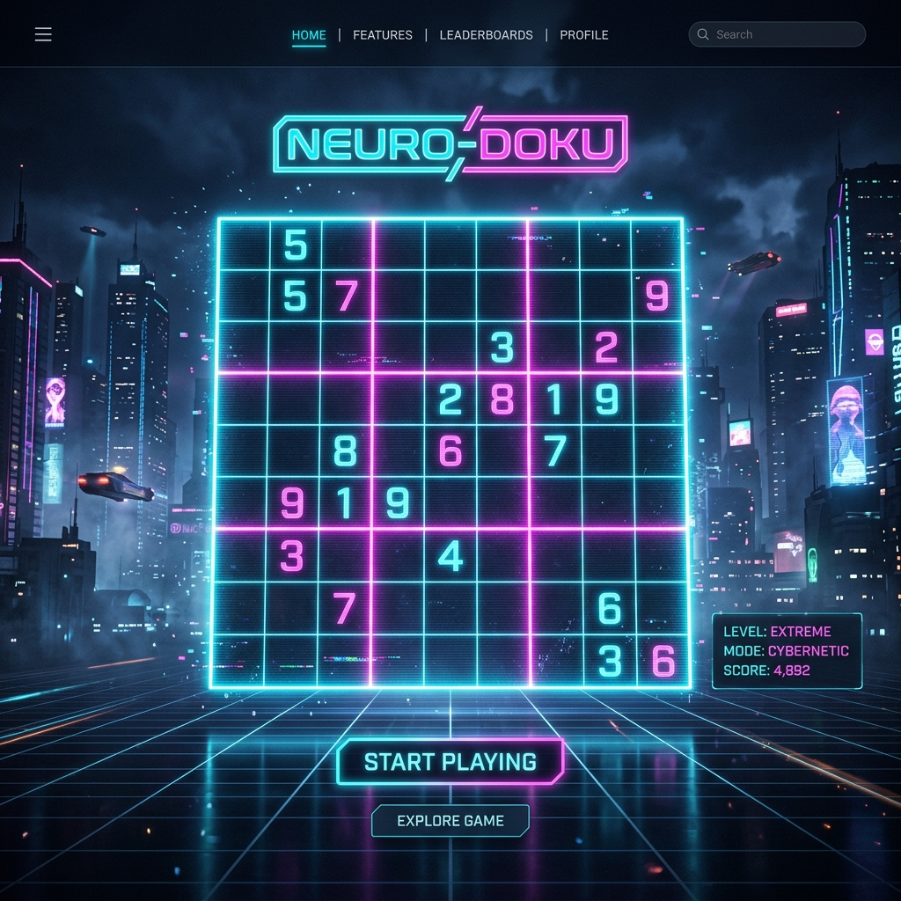

「CYBER SUDOKU」は、SF映画のオペレーション端末のような美麗UIと、快適なパズル操作性を極限まで両立した次世代の数独アプリケーションです。初心者から上級者まで楽しめる4段階の難易度と、やりこみプレイをサポートする強力なセーブ機能を搭載しています。

未来のサイバーパンク空間で思考をクリアにし、グリッドをハックする
EASY、MEDIUM、HARD、そしてパズル極限のEXPERT。あらゆる難度のマトリクスに挑戦可能です。
候補の数字をセルにマークするメモモードを完備。ショートカットキー[N]でスムーズに切り替え可能です。
思考の試行錯誤を完璧に支える履歴管理システムを搭載。いつでも前の状態に戻したりやり直せます。
常に進行状況を保持するオートセーブに加え、任意のプレイデータを残せる3つの手動保存スロットを搭載。
現在入力している値が正しいかを即座に検証する機能と、どうしても解けない場合の答え表示を搭載。
サイバーなビープ音と、クリア時の美しいパーティクル演出が、没入感あふれるプレイ環境を提供します。
以下はLP用に用意された簡易体験グリッドです。任意のセルを選択し、数字を入力してサイバーな操作感を体験してみてください。
「CYBER SUDOKU」はブラウザの `localStorage` 技術を利用し、進行データを瞬時に保存します。不意のブラウザ終了やタブ閉じでも安心のオートセーブ機能はもちろん、難解な盤面の分岐を試したい時に便利な3つの手動セーブスロットを完備。
たったワンコインで、一生涯無限に遊べるフルアクセスへ
買い切り型・追加料金なし
初期状態では5回分の無料ゲームプレイ枠が与えられます。4つの難易度や、メモ機能、チェック機能などの快適性をまずは心ゆくまでお試しください。
CYBER SUDOKUの動作環境や決済システムに関する情報
はい。ゲームの進行状況やセーブスロットの内容はすべてブラウザ内の `localStorage` に保持されます。そのため、ブラウザのキャッシュクリアを明示的に行わない限り、ブラウザやPCを再起動しても続きから再開できます。
Stripe社が提供するグローバル標準 of 暗号化決済システム「Stripe Checkout」を使用しています。クレジットカード情報は当サイトのサーバーを通過せず、直接暗号化されてStripe社に送信されるため、極めて安全に処理されます。
いいえ、完全に「買い切り（ワンタイム決済）」です。一度決済を完了すれば、追加料金なしで無期限にゲームをご利用いただけます。
新しくゲーム盤面を生成（NEW GAMEを実行）するごとに1プレイ消費されます。同じ盤面でやり直したり、セーブデータをロードしたり、ブラウザをリロードするだけではプレイ回数は消費されません。
はい。レスポンシブデザインを採用しており、画面のサイズに応じて入力キーパッドやグリッドが自動で最適化されます。タッチ操作で直感的に数独をお楽しみいただけます。